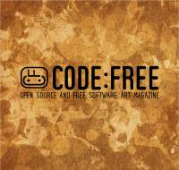

Esta página contiene enlaces a los números publicados de la revista CODE:FREE en 2012 - 2009 - 2008.
Página web: Revista CODE:FREE (copia en archive.org)
Número 4 - 2012 marzo
Descarga (PDF 10.5 MB, inglés)

Número 3 - 2009 septiembre
Descarga (PDF 23.9 MB, inglés)
Número 2 - 2008 agosto
Descarga (PDF 5.0 MB, inglés)
Número 1 - 2008 abril
Descarga (PDF 5.3 MB, inglés)